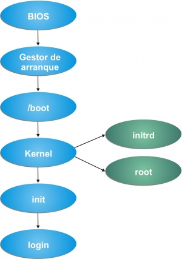

Un servicio de directorio (SD) es una aplicación o un conjunto de aplicaciones que almacena y organiza la información sobre los usuarios de una red de ordenadores y sobre los recursos de red que permite a los administradores gestionar el acceso de usuarios a los recursos sobre dicha red. Además, los servicios de directorio actúan como una capa de abstracción entre los usuarios y los recursos compartidos.
Desarrollos
La gran mayoría de implementaciones están basados en el estándar X.500, que posteriormente fue la base de LDAP, pero utilizando la pila TCP/IP en vez de usar el modelo OSI, adquiriendo especial relevancia en internet. Existen numerosas formas de implementación de servicios de directorio de diferentes compañías. Algunos de estos ejemplos son:
- NIS Network Information Service protocolo, nombrado originalmente como Páginas Amarillas, implementación de Sun Microsystems' en un servicio de directorio para redes de entorno UNIX. (Sun, a principios del 2000, se unió a iPlanet, alianza de Netscape y desarrolló la base de LDAP, servicio de directorio que formó parte de Sun ONE, la empresa que es ahora Sun Java Enterprise).
- NetIQ eDirectory, desarrollado por Novell, es un servicio de directorio que soporta múltiples arquitecturas incluyendo Windows, NetWare, Linux, incluyendo algunas distribuciones de Unix. Se ha utilizado durante tiempo para la administración de usuarios, gestión de configuraciones y gestión de software. eDirectory se ha desarrollado como componente central en una gama más amplia de productos para la gestión de identidad. Fue conocido previamente como servicios de directorio de Novell.
- Servidor de directorio de Red Hat: Red Hat lanzó un servicio del directorio, que adquirió de ‘’’Netscape Security Solutions de AOL’’’, el cual funcionaba como producto comercial bajo Red Hat Enterprise Linux denominado como servidor de directorio de Red Hat como parte del núcleo de Fedora.
- CentOS Directory Server: CentOS Directory Server está basado en Red Hat Directory Server, posee similares características, y está disponible para instalar vía yum, sin necesidad de tener un contrato de por medio. La base del software está licenciada bajo GNU/GPL 2, y se incluye una excepción para ser integrado con software no libre, la cual proviene de RedHat.
- Active Directory: El servicio del directorio de Microsoft, es el directorio que se incluye en las versiones de los sistemas operativos Windows 2000 y Windows Server 2003.
- Open Directory: El servidor del Mac OS X de Apple ofrece un servicio del directorio llamado Open Directory que integra muchos protocolos estándares abiertos tales como LDAP y Kerberos así como soluciones propietarias de directorio como Active Directory y eDirectory.
- Servidor de directorio de Apache: Apache Software Fundation ofrece un servicio del directorio llamado ApacheDS.
- Directorio de Internet de Oracle: (OID) es el servicio del directorio de Oracle Corporation, que es compatible con la versión 3 de LDAP.
- Directorio CA: El directorio CA contiene un motor de caché previo que puede indexar todos los atributos que se usan en los filtros de búsqueda de LDAP, y poner en cache aquellos atributos devueltos en tales búsquedas. Teniendo bastante memoria, el directorio CA es el directorio más rápido del planeta [1].
- Servidor de Sun Java System: Sun Microsystems también ofrece servicio de directorio actual, consultando en [2].
- OpenDS: La nueva generación de servicio de directorio abierto ofrecido por Sun Microsystems, alojado en [3].
- OpenDJ: Tras la adquisición de Sun Microsystems por parte de Oracle, se crea la empresa ForgeRock que retoma la naturaleza open source heredada por Sun.
Servicios de Dominio
Un dominio en redes de computadoras puede referirse a cuatro cosas.
- La parte principal de una direccion en la web que indoca a la organizacion o compañia que administra dicha pagina o sitio web
- el espacio en red que contiene todas las estaciones y los distintos recursos compartidos administrados por el servidor
- la confianza entre dominmios no es transitiva es decir si A confia en B, B cnfia en C, A no confia en C
- El conjunto de computadoras conectadas en una red informatica que confian a uno de los equipos de la red, la administracion de los usuarios y los privilegios de cada uno sobre los recursos de la red.
Arranque y parada del sistema
Una de las funciones de un administrador de sistemas es poder contestar en todo momento las siguientes preguntas: ¿Qué sistema operativo se ejecuta en nuestro sistema? ¿Qué servicios o programas se ejecutan en el sistema? ¿Cuándo se ejecutan? Lógicamente, estos factores afectan muy estrechamente a la seguridad y al rendimiento del sistema. En esta sección vamos a abordar los temas necesarios para poder tener control total sobre el proceso y arranque del sistema. Para ello, tal y como podemos ver en la figura 1, cuando se inicia el equipo primero inicia la BIOS que permite detectar y acceder al hardware del sistema. A partir de ahí, carga el gestor de arranque (que en Linux se llama GRUB) y en el caso de iniciar un sistema GNU/Linux accede al directorio /boot donde carga el kernel o núcleo del sistema operativo y ejecuta el proceso init que será el encargado de iniciar todos los servicios para que el sistema funcione correctamente.
En algunas ocasiones es necesario apagar o reiniciar el sistema:mantenimiento, diagnóstico, hardware nuevo, etc.
Las acciones que se realizan en el proceso de parada son:
- Se notifica a los usuarios
- Procesos en ejecución⇒enviar la señal de terminación(TERM)
- Se paran los demonios
- A los usuarios que quedan conectados se les echa del sistema
- Procesos que queden en ejecución⇒enviar la señal de fin(KILL)
- Actualizaciones de disco pendientes(integridad del SF)consync
-
Dependiendo del tipo de shutdown:
- Se cambia a modo monousuario, opción por defecto
- Se apaga el ordenador
- Se reinicia el sistema
Conclusion
en este documento pudimos explorar un poco en el tema de los dominios de red, en el que son y por que son tan importantes en redes de computadoras, ademas de eso pudimos explorar un poco en el proceso de inicio y apagado del sistema el cual es importante comprender pues resulta muy util al dbuguear un equipo.
Documento extra no referenciado pero muy bueno http://infocornella.weebly.com/uploads/7/8/2/5/7825663/arranque_y_parada_del_sistema.pdf
Referencias
Dominios y servicios de directorio (Dominio (Controlador de dominio (Enâ¦. (s. f.). Coggle. Recuperado 22 de septiembre de 2020, de https://coggle.it/diagram/WKcSIX5jXwABfxkK/t/dominios-y-servicios-de-directorio
Linux - Arranque y parada del sistema - ASO. (s. f.). adminso. Recuperado 22 de octubre de 2020, de http://www.adminso.es/index.php/Linux_-_Arranque_y_parada_del_sistema